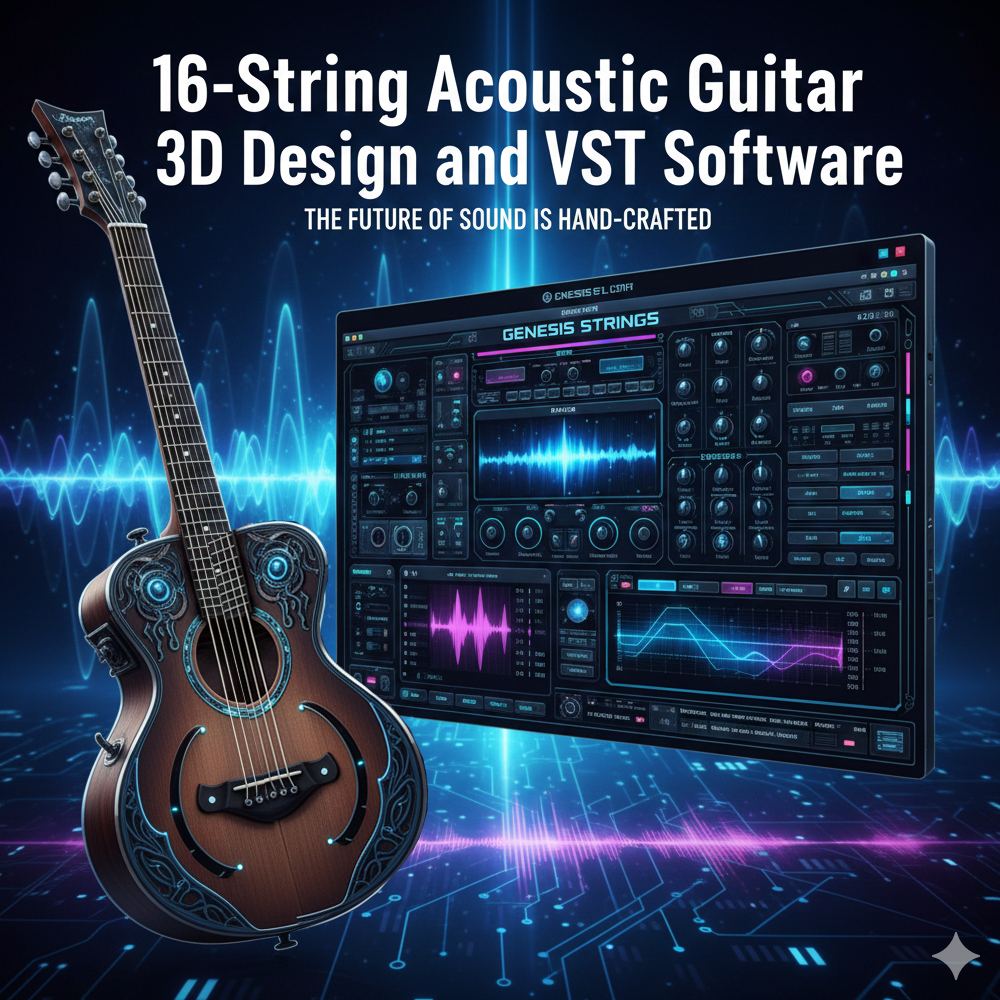

|  |
16-String Acoustic Guitar 3D Design and VST Software
16-String Acoustic Guitar: The Sovereign VST Architecture Powered by the Ònka Yorùbá 22-Color Infinite Notation Welcome to the Ònka Yorùbá Digital Sanctum. This is the world’s first 3D Design and VST suite engineered with Visual Rescue Philosophy, allowing you to navigate the harmonic universe from 0 to Over a Decillion frequency at the speed of light. The Sovereign Advantage: 22-Color Circle of Fifths Unlike traditional 12-tone systems that repeat, our Infinite Circle of Fifths uses the 22-Color Index to provide a unique visual "coordinate" for every harmonic modulation.
Advantages for Novices: The Visual Rescue Path For the beginner, the 16-string guitar is no longer an intimidating "wall of strings"—it is a vibrant map of discovery.
Advantages for Professionals: Quantum Harmonic Engineering For the master producer, this software provides a "Universal Passport" to unexplored sonic territories.
The Sovereign Secret: > "In music, as in life, when you face a wall of complex data, don't look harder—look differently. Our 22-Color VST is the lighthouse in the sea of sound."
Sovereign User Manual: The 22-Color Harmonic Guide Welcome to the bridge between Ethnomathematics and Quantum Acoustics. This guide ensures you never get "lost in the strings." By applying the Visual Rescue Philosophy to the 16-string fretboard, we have turned the complexity of the infinite into a playable spectrum.
Traditional 16-string guitars can be a "Sea of Zeros" (blank spaces and confusion). In our VST, the fretboard is alive:
The Ònka Yorùbá logic transforms the Circle of Fifths from a closed loop into a Sovereign Spiral.
In Ònka logic, "l" is the jump. In this VST, Neon Pink is your portal.
The Sovereign Workflow: 3 Steps to Infinity
"The strings are the numbers; the colours are the music. To play the 16-string is to count the universe in song." |